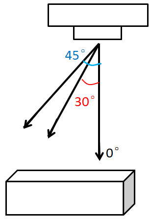

倾斜摄影与正射
设置里的相机倾斜角是什么？什么时候生效？如何设置？为什么不能设置成 0 度？
为了拍出更好的三维效果，Altizure app 每个区域会设计 5 条线路（1 条正射 + 4 条倾斜），我们建议在有能力的情况下完成全部 5 条线路。
这 5 条线路中，线路 1 的相机角度为 0 度，也就是垂直向下，正对地面拍摄，这时倾斜角选项不起作用。线路 2 - 5 里，相机不再正对地面，而是稍微偏向地平线，倾斜向拍摄物体的侧面，这个角度就是倾斜角（以垂直方向为 0 度）。(如下图所示)
app 里默认的设置已经能应对大部分场景，一般无需更改。

能不能只拍正射？
可以，如果你只需要拍正射，只需要飞完第一条线路，不必把倾斜角更改为 0。（请参考上一条）
该文档最后修改于 Wed May 09 2018 13:53:32 GMT+0800 (HKT)